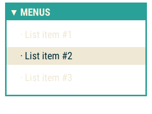

GalleryComm 395


Featured Posts
- April Fools! Congrats to Our REAL March 2016 Challenge Winner, Lost_Pathfinder! :P by /u/clockworklycanthrope (on Friday Apr 1st)
- [Critique] First chapter of 'By Grace of Moonlight', 2700 words by /u/lynkfox (on Saturday Apr 2nd)
- Winning your battles with brute force is lame. How do you write a satisfying end for your big bads? by /u/DontRockTheGoat (on Friday Apr 1st)
- Seeking critique for prologue and first chapter of Almost Night II (~2300 words) by /u/Jacob_wallace (on Saturday Apr 2nd)
- Drug use in Fantasy by /u/HoneycombPerc (on Friday Apr 1st)


